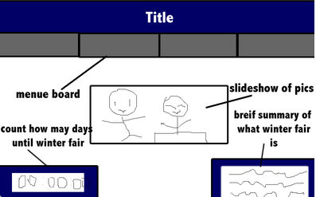

Making the Home Page
How will this site look like?
.png)
Wireframing
1st Idea

Why this idea wasn't used
- the pictures are spamming the page
- doesn't look pleasant to the eye and it's very messy, so it's hard to focus on the most important information
2nd Idea

Why this idea wasn't used
- this wireframe didn't include the signup aspect
- this also didn't include contact list
- so if the audience encounters a problem, they might not know who to contact (doesn't solve problem of miscommunication)
3rd Idea

Why this idea wasn't used
- a picture slideshow doesn't help the audience to signup for volunteer
- a description of winter fair is also not necessary
- because the audience should already know what the winter fair is before coming to the site
4th Idea

This was the CHOSEN idea, but why?
- shows the main point and is easy to understand
- also if the audience has trouble, the description should be able to help, if not, there are a list of contacts
But there are still somethings that this layout can't do, like...
- doesn't have pictures to draw in interest
- maybe there is an easier way to signup rather than clicking on each individual link to signup
To-Do List
- for after creating the wireframe
- get approval from client
- move on an create storyboard
-
- chose colors, images, fonts to replace gray squares
- replace and resize
- save
- get approval (make changes if needed)
- make file with clickable links in Fireworks
Storyboard
Ideas for Themes
- AIS color scheme (blue, red, white)
- Winter theme, because it's WINTER Fair
Progress
Feedback/Questions to think about
- If "Sign Up!" is the call-to-action, why would the contact list be next to it? Doesn't it distract the audience?
- I want it there because it helps the audience to correspond the contact list with the volunteering list
- How would the call-to-action stand out?
Prototyping
This image above is the storyboard and how I sliced the page up to create my prototype
Click here to see actual Fireworks file.
How did I create it?
- after I finish editing the storyboard (adding colors and such), I have to slice it
- link up sliced images to links
- then, export
Pro's and Con's of Fireworks for Webpage
The storyboards above are made in Fireworks.
Pro's
- allows quick editing
- through slicing and linking
-
- allows you to just draw shapes and no need to code
Con's
- if you want to edit something, you will have to go back to original Fireworks file to edit it
- becomes very difficult as you will have to export again
Prototyping Continued
Next, I did another homepage in Dream Weaver.
How was this created?
- Wireframe was recreated with boxes to outline the sections in the page
- Then, using CSS rules, the boxes are customized to make the webpage
Pro's and Con's of Dream Weaver for Webpage
Pro's
- allows easy wireframing
- as you can just click and drag
- allows easy and precise editing
- uses CSS for precise numbers and values
- allows quick edits and changes
Con's
- time-consuming to use CSS to edit
- can't insert gradient colors or multiple patterns
Is this Website User-Based?
Looking at the homepage, the site is not as user-based than an ideal site.
Maybe using Google Forms will be easier for the users to navigate, like this.
This is an example of the new page